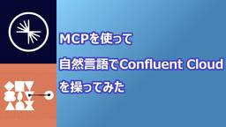

SIOS Tech. Lab
https://tech-lab.sios.jp
サイオステクノロジーのエンジニアが クラウド、OSS、認証に関する様々な情報を提供します。
フィード
知っておくとちょっと便利！cron によるタスク管理1
SIOS Tech. Lab
今号では、cron によるタスクの定期実行について、その仕組みや設定方法について説明します！ cron とは cron とは、指定した時間、曜日、日付に自動でコマンドを実行してくれるデーモンの名称です。 デフォルトでもい ...知っておくとちょっと便利！cron によるタスク管理1 first appeared on SIOS Tech. Lab.
1日前

【2025年5月】OSSサポートエンジニアが気になった！OSS最新ニュース
SIOS Tech. Lab
こんにちは！ 今月も「OSSのサポートエンジニアが気になった！OSSの最新ニュース」をお届けします。 今後リリース予定の Linux 6.15 カーネルをもって、「i486」と初期「Pentium」プロセッサのサポートが ...【2025年5月】OSSサポートエンジニアが気になった！OSS最新ニュース first appeared on SIOS Tech. Lab.
1日前

MCP を使って 自然言語で Confluent Cloud を操ってみた
SIOS Tech. Lab
はじめに こんにちは、サイオステクノロジーの小沼 俊治です。SaaS 型のデータストリーミングプラットフォームの Confluent で、自然言語にて Confluent Cloud を操作できる Confluent M ...MCP を使って 自然言語で Confluent Cloud を操ってみた first appeared on SIOS Tech. Lab.
3日前

アクセス解析、やるならこれ！初心者にもわかりやすいMatomoのすすめ
2
SIOS Tech. Lab
こんにちは。サイオステクノロジーの久保です。 突然ですが、ご自身のウェブサイトが現在どのような状況にあるのか、把握できていますか？ どのページがよく閲覧されているのか、どこから訪問者が来ているのか、どのようなユーザーが関 ...アクセス解析、やるならこれ！初心者にもわかりやすいMatomoのすすめ first appeared on SIOS Tech. Lab.
6日前
【Azure】EntraIDにおけるアプリケーションマニフェストとは？
SIOS Tech. Lab
こんにちは、サイオステクノロジーの佐藤 陽です。 今回は少しニッチなところで、EntraIDのアプリケーションマニフェストの概要をご紹介したいと思います。 本当に記事にしたいのはこのマニフェスト部分関連でハマったポイント ...【Azure】EntraIDにおけるアプリケーションマニフェストとは？ first appeared on SIOS Tech. Lab.
6日前

PostgreSQLのWAL管理 max_wal_sizeとwal_keep_sizeの役割とチューニング
SIOS Tech. Lab
サイオステクノロジーの橋本です。 個人的に max_wal_size と wal_keep_size の役割を忘れたり、混同しがちなので、 備忘のためブログを書きます。 パラメータの説明 max_wal_size Pos ...PostgreSQLのWAL管理 max_wal_sizeとwal_keep_sizeの役割とチューニング first appeared on SIOS Tech. Lab.
9日前
RHEL 10 同梱版主要 OSS のバージョンまとめ
SIOS Tech. Lab
こんにちは、OSSよろず相談室の神崎です。RHEL 10 がリリースされたということで、同梱版の OSS のバージョンについて軽くまとめていきたいと思います。 Apache HTTP Server httpd-2.4.6 ...RHEL 10 同梱版主要 OSS のバージョンまとめ first appeared on SIOS Tech. Lab.
15日前
オリジナルのちょっと便利な MCP サーバー を作ってみた
SIOS Tech. Lab
はじめに こんにちは、サイオステクノロジーの小沼 俊治です。以前の記事ではベンダーが公開されている MCP サーバーを組み込んで利用してみましたが、 もう少し仕組みを理解してみたくなったので、独自で考えた機能を搭載した「 ...オリジナルのちょっと便利な MCP サーバー を作ってみた first appeared on SIOS Tech. Lab.
16日前
MCP を使って 自然言語で Kong Konnect を操ってみた
SIOS Tech. Lab
はじめに こんにちは、サイオステクノロジーの小沼 俊治です。私たち API ソリューション サービスラインでパートナーとしてお取り扱いしている商材の一つである、SaaS 型の API マネージメントプラットフォームの K ...MCP を使って 自然言語で Kong Konnect を操ってみた first appeared on SIOS Tech. Lab.
17日前
Google認証機能を持つApache HTTP Webサーバを構築してみた
SIOS Tech. Lab
こんにちは、新卒2年目になりました、伊藤です。昨年は、Azure Static Web AppsでGoogle認証機能を持つアプリケーションを作成する方法を紹介しました。https://tech-lab.sios.jp/ ...Google認証機能を持つApache HTTP Webサーバを構築してみた first appeared on SIOS Tech. Lab.
17日前